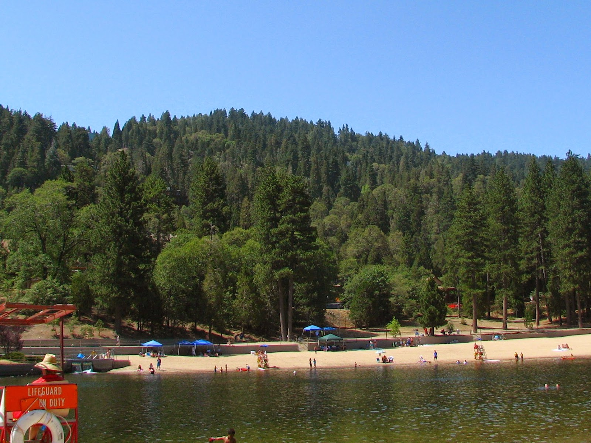
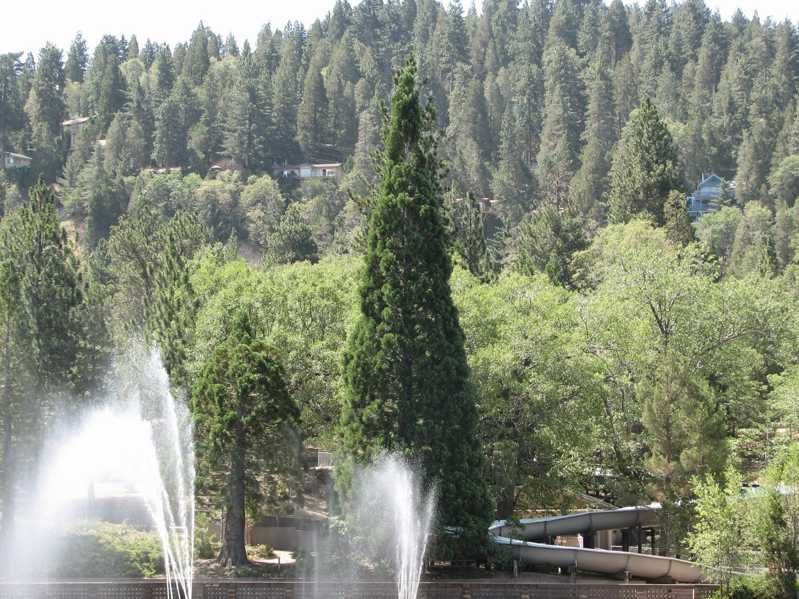
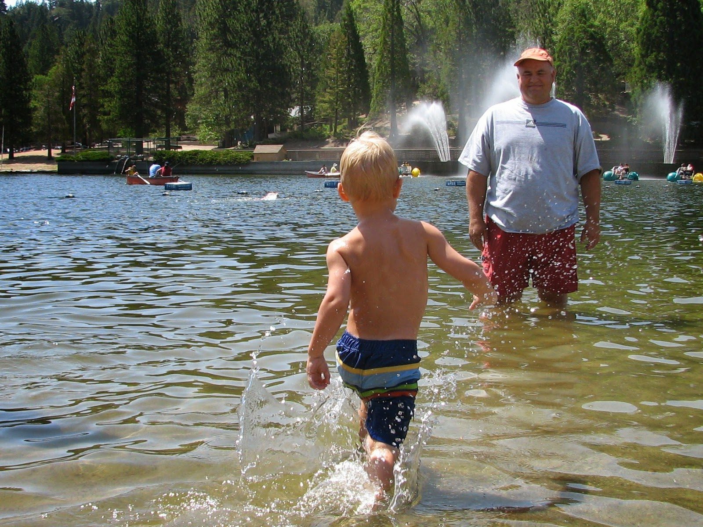
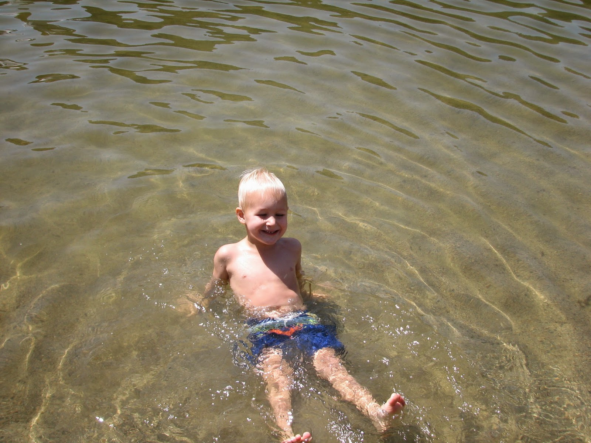
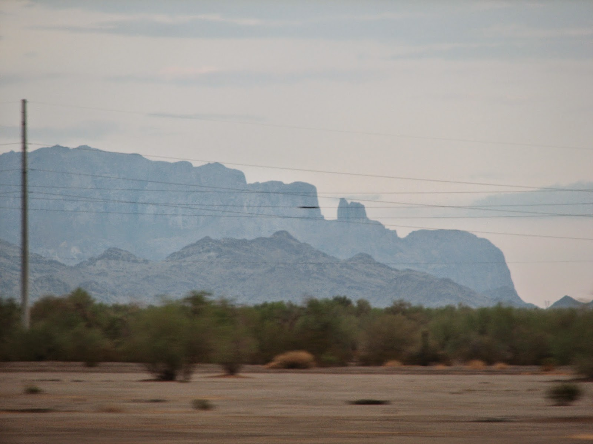

Recovered weblog entry
Lake Arrowhead, revisited
A brief hiatus from the blog, but I come back with content. Actually, I'll confess a bit of writer's block that affects me even now. I know the only way to overcome this pitfall is to keep writing...so if the quality suffers as I go along here, my apologies.
As I wrote last week, the family and I took a trip to Lake Arrowhead over the weekend. We didn't stay for very long, I'm sad to say. Not nearly long enough. The weather was obscenely beautiful with the temperatures never gracing the 90 degree platform. There was nary a cloud in the satiny blue sky. To leave Arizona during the hottest month was the best part about it all, though it left a fog over our mind when we thought about going back home. Here, just see for yourself.

Does it get much better than that? This was Saturday, our day at Lake Gregory. It's not too far away from the town of Lake Arrowhead, and kids prefer it as a destination, owing to the water slides and all. If you look close in the next picture, you can see it winding down through the trees. If only I had a better trained eye for this type of thing, the slide would be the focus of the picture, rather that...well, nothing in particular. Maybe that big tree in the middle. Which looks like it belongs in Rockefeller Center.

It's quite sad...I'm looking through the photos I took, and it's bare indeed. I hardly took time to snap anything. What can I say, I was too busy not doing anything in particular. Not something I get to do very often.
When Sumner ran up to the lake, he had two very important questions for us. Why was there sand in the pool? Where is the blue water? He wanted blue water, if possible. He even said please and thank you. But that didn't stop him from diving right in. And let me tell you, it was cold water. Dad didn't even go in past his ankles. What a bum.


We stayed in Lake Arrowhead until about 4:00pm on Sunday. More often than not, we leave in the early morning hours, but this time we just couldn't pull ourselves away from the scene. We played pool, read, played more pool, read again, ate, sat out on the deck, and read some more. I finished Harry Potter #6 on the way home. Wait, I feel redundant. I digress.
I saw some interesting mountains a ways off in the distance as we were traveling home on the I-10 that evening, and it made me realize again just how beautiful and varied Arizona is. I'll probably never even see a tenth of the things this state has to offer.
Sorry about the fuzziness of the pictures, it was getting dark and we were traveling at 80 mph, after all. But you'll get the idea.

That cold that I mentioned last week is still with me. I can't stop coughing and it's becoming annoying. Yes, I ought to take better care of myself, and I thought I was over this bout until the cool mountain air entered my lungs late Thursday night. I woke up feeling it Friday morning, and I'm having the hardest time shaking it.
See, I told you i'd wander all over this blog. A million apologies. I'm going to end it there, if you don't mind. Enjoy the pictures, and be sure to head on over the the Moblah'g when you have the opportunity. Always something going on there, for certain.